การ์ด (126)
ใส่ช่องการ์ดของอุปกรณ์ชนิดที่ตรงกับ “ใส่ที่” · แตะหัวตารางเพื่อเรียง · ช่องค้นหากรองตามชื่อหรือผลของการ์ด
| การ์ด | ใส่ที่ | ผล | ดรอปจาก | โอกาส |
|---|---|---|---|---|
| การ์ดกบหนองน้ำ | เครื่องประดับ 1 | ตีแล้วร่ายสกิลเองบางครั้ง (สกิลนั้นยังไม่มีในเกม ยังไม่มีผล) | กบหนองน้ำ | 0.01% |
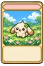 การ์ดกระต่ายขนฟู | อาวุธ | LUK +1 ติดคริ +1% หลบสมบูรณ์ +1 | กระต่ายขนฟู | 0.2% |
| การ์ดกัปตันปูยักษ์ | อาวุธ | STR +3 DEX +3 โจมตี +5% คริแรง +10% | กัปตันปูยักษ์ | 1% |
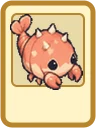 การ์ดกุ้งหนาม | เครื่องประดับ 1 | AGI +2 | กุ้งหนาม | 0.01% |
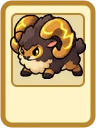 การ์ดแกะเขาสายฟ้า | อาวุธ | ใช้สกิลตีสองครั้ง Lv1 ได้ (ไม่ต้องเรียน) | แกะเขาสายฟ้า | 0.01% |
 การ์ดโกเลมคริสตัล การ์ดโกเลมคริสตัล | เครื่องประดับ 1 | ใช้สกิลฮีล Lv1 ได้ (ไม่ต้องเรียน) SP ที่ใช้ +25% | โกเลมคริสตัล | 0.01% |
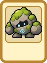 การ์ดโกเลมหิน | โล่ | โดนเผ่าแมลงตีเบาลง 30% | โกเลมหิน | 0.01% |
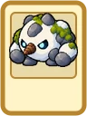 การ์ดโกเลมหิมะ | เครื่องประดับ 1 | STR +3 | โกเลมหิมะ | 0.01% |
 การ์ดคนงานเหมืองผี การ์ดคนงานเหมืองผี | อาวุธ | ดาเมจใส่ขนาดกลาง +15% โจมตี +5 | คนงานเหมืองผี | 0.01% |
 การ์ดค้างคาว การ์ดค้างคาว | โล่ | โดนตีไกลเบาลง 35% | ค้างคาวถ้ำ | 0.01% |
 การ์ดค้างคาวไฟ การ์ดค้างคาวไฟ | อาวุธ | ดาเมจใส่ธาตุน้ำ +20% | ค้างคาวไฟ | 0.01% |
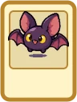 การ์ดค้างคาวสนธยา | อาวุธ | ตีติดตาบอด 5% โจมตี +5 | ค้างคาวสนธยา | 0.01% |
| การ์ดโคมผี | เครื่องประดับ 1 | ใช้สกิลส่องหาคนซ่อน Lv1 ได้ (ยังไม่เปิดผล) | โคมผี | 0.01% |
| การ์ดโครงกระดูก | อาวุธ | โจมตี +10 ตีติดมึน 2% | โครงกระดูก | 0.1% |
 การ์ดเงาราชันย์ การ์ดเงาราชันย์ | หมวก (บน) | HP สูงสุด -10% SP สูงสุด -10% เวลาร่าย -10% | เงาราชันย์ | 0.01% |
 การ์ดจระเข้หนอง การ์ดจระเข้หนอง | เกราะ | VIT +3 | จระเข้หนอง | 0.01% |
 การ์ดจอมเวทชรา การ์ดจอมเวทชรา | อาวุธ | จอมเวทชรา | 0.01% | |
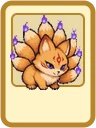 การ์ดจิ้งจอกเก้าหาง | ผ้าคลุม | AGI +2 FLEE +20 (ตีบวก +9 ขึ้นไป) | จิ้งจอกเก้าหาง | 0.01% |
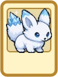 การ์ดจิ้งจอกหิมะ | ผ้าคลุม | ต้านธาตุดิน 30% FLEE +5 | จิ้งจอกหิมะ | 0.01% |
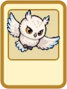 การ์ดเจ้านกฮูกหอระฆัง | เครื่องประดับ 1 | ตีแล้วร่ายสกิลเองบางครั้ง (สกิลนั้นยังไม่มีในเกม ยังไม่มีผล) | เจ้านกฮูกหอระฆัง | 0.01% |
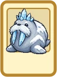 การ์ดเจ้าวอลรัสธารน้ำแข็ง | อาวุธ | HIT +100 | เจ้าวอลรัสธารน้ำแข็ง | 0.01% |
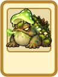 การ์ดเจ้าหนองหมอก | รองเท้า | HP สูงสุด -25% โดนตีไม่ชะงัก (เกมเราไม่มีชะงักอยู่แล้ว) เวลาร่าย -15% | เจ้าหนองหมอก | 0.01% |
 การ์ดซอมบี้ การ์ดซอมบี้ | รองเท้า | ฟื้น HP เอง +20% | ซอมบี้ | 0.1% |
| การ์ดซอมบี้นักโทษ | รองเท้า | โดนเผ่าอมตะตีเบาลง -20% | ซอมบี้นักโทษ | 0.01% |
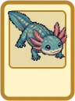 การ์ดซาลาแมนเดอร์ลำธาร | เกราะ | HP +400 SP +50 | ซาลาแมนเดอร์ลำธาร | 0.01% |
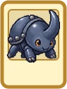 การ์ดด้วงเขาเหล็ก | เกราะ | ชุดเป็นธาตุดิน ป้องกัน +1 | ด้วงเขาเหล็ก | 0.01% |
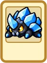 การ์ดด้วงคริสตัล | หมวก (บน) | กันตาบอด 20% ป้องกัน +1 | ด้วงคริสตัล | 0.01% |
 การ์ดด้วงเปลือกดิน การ์ดด้วงเปลือกดิน | โล่ | ป้องกัน +2 MDEF +3 | ด้วงเปลือกดิน | 0.01% |
| การ์ดดอกไม้ทะเล | อาวุธ | ตีติดแช่แข็ง 5% โจมตี +5 | ดอกไม้ทะเล | 0.01% |
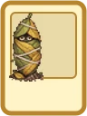 การ์ดดักแด้ใบไม้ | เกราะ | HP +700 | ดักแด้ใบไม้ | 0.01% |
 การ์ดดาบเขี้ยวอสูร การ์ดดาบเขี้ยวอสูร | โล่ | ป้องกัน +1 | ดาบเขี้ยวอสูร | 0.01% |
 การ์ดดาบอาถรรพ์ การ์ดดาบอาถรรพ์ | โล่ | ป้องกัน +1 | ดาบอาถรรพ์ | 0.01% |
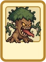 การ์ดต้นไม้กินคน | ผ้าคลุม | ต้านธาตุดิน 30% FLEE +5 | ต้นไม้กินคน | 0.01% |
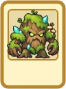 การ์ดต้นไม้โบราณ | โล่ | สะท้อนเวท 50% (มอนในเกมยังไม่ใช้เวท) | ต้นไม้โบราณ | 0.01% |
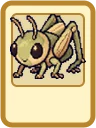 การ์ดตั๊กแตนผา | อาวุธ | ตีติดใบ้ 5% โจมตี +5 | ตั๊กแตนผา | 0.01% |
 การ์ดตำรางับ การ์ดตำรางับ | หมวก (บน) | INT +1 | ตำรางับ | 0.01% |
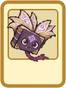 การ์ดตำราผีสิง | อาวุธ | ดาเมจใส่ธาตุน้ำ +20% | ตำราผีสิง | 0.01% |
 การ์ดทหารกระดูก การ์ดทหารกระดูก | อาวุธ | ดาเมจใส่ธาตุแสง +20% | ทหารกระดูก | 0.01% |
 การ์ดทหารกระดูกเฝ้าถ้ำ การ์ดทหารกระดูกเฝ้าถ้ำ | อาวุธ | ติดคริ +9% | ทหารกระดูกเฝ้าถ้ำ | 0.01% |
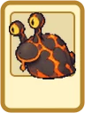 การ์ดทากลาวา | หมวก (บน) | กันตาบอด 20% ป้องกัน +1 | ทากลาวา | 0.01% |
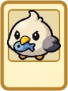 การ์ดนกนางนวล | เครื่องประดับ 1 | ใช้สกิลวาร์ป Lv1 ได้ (ไม่ต้องเรียน) | นกนางนวลขี้แย่ง | 0.01% |
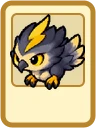 การ์ดนกพายุ | อาวุธ | ฆ่าเผ่ามังกร ได้ SP +5 | นกพายุ | 0.01% |
 การ์ดนกฮูกหิมะ การ์ดนกฮูกหิมะ | อาวุธ | โอกาสดูดเลือด 3% ดูดเลือด 15% ของดาเมจ (เมื่อติด) | นกฮูกหิมะ | 0.01% |
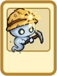 การ์ดนักดาบพเนจร | ผ้าคลุม | นักดาบพเนจร | 0.01% | |
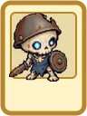 การ์ดนักโทษกระดูก | เกราะ | นักโทษกระดูก | 0.01% | |
 การ์ดนักบวชเงามืด การ์ดนักบวชเงามืด | อาวุธ | นักบวชเงามืด | 0.01% | |
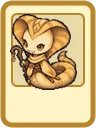 การ์ดนางงูทราย | ผ้าคลุม | ต้านธาตุมืด 30% FLEE +5 | นางงูทราย | 0.01% |
 การ์ดนางเงือกร้าย การ์ดนางเงือกร้าย | เครื่องประดับ 1 | ใช้สกิลรักษาสถานะ Lv1 ได้ (ยังไม่เปิดผล) | นางเงือกร้าย | 0.01% |
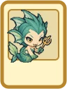 การ์ดนางรำต้องสาป | โล่ | LUK +2 | นางรำต้องสาป | 0.01% |
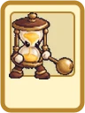 การ์ดนาฬิกาทรายเดินได้ | เกราะ | นาฬิกาทรายเดินได้ | 0.01% | |
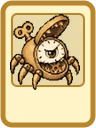 การ์ดนาฬิกาปลุกกล | รองเท้า | HP +300 VIT +1 | นาฬิกาปลุกกล | 0.01% |
| การ์ดปลาหมึกน้อย | ผ้าคลุม | ต้านธาตุน้ำ 30% FLEE +5 | ปลาหมึกน้อย | 0.01% |
 การ์ดปีศาจโซ่ตรวน การ์ดปีศาจโซ่ตรวน | เกราะ | ปีศาจโซ่ตรวน | 0.01% | |
 การ์ดปีศาจหน้ากาก การ์ดปีศาจหน้ากาก | เกราะ | ชุดเป็นธาตุลม ป้องกัน +1 | ปีศาจหน้ากาก | 0.01% |
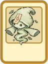 การ์ดปีศาจหอลม | เครื่องประดับ 1 | ตีแล้วร่ายสกิลเองบางครั้ง (สกิลนั้นยังไม่มีในเกม ยังไม่มีผล) | ปีศาจหอลม | 0.01% |
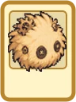 การ์ดปุยฝุ่นเฟือง | ผ้าคลุม | ปุยฝุ่นเฟือง | 0.01% | |
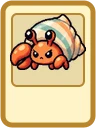 การ์ดปูเปลือกทอง | ผ้าคลุม | VIT +1 | ปูเปลือกทอง | 0.01% |
 การ์ดปูยักษ์ การ์ดปูยักษ์ | อาวุธ | ดาเมจใส่ธาตุไฟ +20% | ปูยักษ์ | 0.01% |
 การ์ดปูเสฉวน การ์ดปูเสฉวน | หมวก (บน) | กันใบ้ 20% ป้องกัน +1 | ปูเสฉวน | 0.01% |
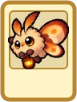 การ์ดผีเสื้อกลางคืนถือโคม | หมวก (บน) | กันสับสน 100% ต้านธาตุดิน 15% | ผีเสื้อกลางคืนถือโคม | 0.01% |
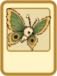 การ์ดผีเสื้อป่า | เครื่องประดับ 1 | ใช้สกิลวาร์ป Lv1 ได้ (ไม่ต้องเรียน) | ผีเสื้อป่า | 0.01% |
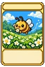 การ์ดผึ้งน้อย | อาวุธ | STR +1 โจมตี +3 | ผึ้งน้อย | 0.2% |
 การ์ดผู้คุมหอนาฬิกา การ์ดผู้คุมหอนาฬิกา | หมวก (บน) | INT +1 เวลาร่าย -5% | ผู้คุมหอนาฬิกา | 0.01% |
 การ์ดผู้คุมอยุติธรรม การ์ดผู้คุมอยุติธรรม | อาวุธ | ตีแล้วร่ายสกิลเองบางครั้ง (สกิลนั้นยังไม่มีในเกม ยังไม่มีผล) | ผู้คุมอยุติธรรม | 0.01% |
 การ์ดผู้พิทักษ์ศิลา การ์ดผู้พิทักษ์ศิลา | รองเท้า | HP สูงสุด +10% AGI +1 | ผู้พิทักษ์ศิลา | 0.01% |
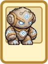 การ์ดผู้พิทักษ์หิน | อาวุธ | ตีติดสับสน 5% | ผู้พิทักษ์หิน | 0.01% |
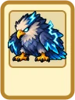 การ์ดพญาอินทรีอัสนี | หมวก (บน) | สกิลไม่ใช้อัญมณี (เกมเรายังไม่มีสกิลใช้อัญมณี) SP ที่ใช้ +25% | พญาอินทรีอัสนี | 0.01% |
 การ์ดพลธนูกระดูก การ์ดพลธนูกระดูก | อาวุธ | ดาเมจตีไกล +10% | พลธนูกระดูก | 0.01% |
| การ์ดพลธนูเกราะทมิฬ | เครื่องประดับ 1 | พลธนูเกราะทมิฬ | 0.01% | |
 การ์ดเพชฌฆาตเงา การ์ดเพชฌฆาตเงา | อาวุธ | ฆ่าเผ่ามนุษย์ ได้ SP +5 | เพชฌฆาตเงา | 0.01% |
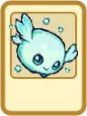 การ์ดแพลงก์ตอนเรือง | อาวุธ | ตีติดหลับ 5% โจมตี +5 | แพลงก์ตอนเรือง | 0.01% |
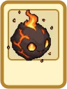 การ์ดภูตถ่านหิน | หมวก (บน) | กันตาบอด 20% ป้องกัน +1 | ภูตถ่านหิน | 0.01% |
| การ์ดภูตผ้าห่อศพ | เครื่องประดับ 1 | ภูตผ้าห่อศพ | 0.01% | |
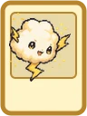 การ์ดภูตสายฟ้า | เครื่องประดับ 1 | STR +3 | ภูตสายฟ้า | 0.01% |
| การ์ดภูตแสงดาว | เครื่องประดับ 1 | DEX +3 | ภูตแสงดาว | 0.01% |
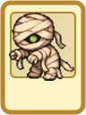 การ์ดมัมมี่ | อาวุธ | HIT +20 | มัมมี่ | 0.01% |
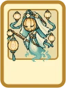 การ์ดแม่โคมวิญญาณ | รองเท้า | เดินเร็วขึ้น 25% | แม่โคมวิญญาณ | 0.01% |
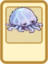 การ์ดแมงกะพรุนเกยตื้น | เครื่องประดับ 1 | ใช้สกิลถอนพิษ Lv1 ได้ (ยังไม่เปิดผล) | แมงกะพรุนเกยตื้น | 0.1% |
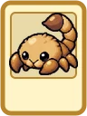 การ์ดแมงป่องทราย | เครื่องประดับ 1 | ฟื้น HP เอง +10% | แมงป่องทราย | 0.01% |
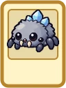 การ์ดแมงมุมถ้ำ | อาวุธ | โจมตี +20 | แมงมุมถ้ำ | 0.01% |
| การ์ดแม่มดไม้กวาด | เกราะ | ชุดเป็นธาตุมืด | แม่มดไม้กวาด | 0.01% |
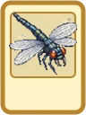 การ์ดแมลงปอยักษ์ | เกราะ | DEX +1 โจมตี +5 | แมลงปอยักษ์ | 0.01% |
 การ์ดแมลงวันเหล็ก การ์ดแมลงวันเหล็ก | เกราะ | ต้านธาตุลม 10% ป้องกัน +2 | แมลงวันเหล็ก | 0.01% |
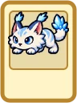 การ์ดแมวป่าน้ำแข็ง | ผ้าคลุม | ต้านธาตุลม 30% FLEE +5 | แมวป่าน้ำแข็ง | 0.01% |
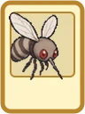 การ์ดยุงยักษ์ | อาวุธ | ฆ่าเผ่าสัตว์น้ำ ได้ SP +5 | ยุงยักษ์ | 0.01% |
| การ์ดราชันย์อสูรปราสาทร้าง | รองเท้า | ราชันย์อสูรปราสาทร้าง | 0.01% | |
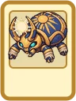 การ์ดราชาด้วงทองแห่งสุสาน | เครื่องประดับ 1 | ฟื้นจากหมดสติ HP/SP เต็ม | ราชาด้วงทองแห่งสุสาน | 0.01% |
| การ์ดราชาสไลม์ | เครื่องประดับ 1 | STR +2 AGI +2 VIT +2 INT +2 DEX +2 LUK +2 โจมตี +6% HP สูงสุด +6% ยาฟื้น HP แรงขึ้น +15% | ราชาสไลม์ | 1% |
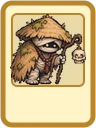 การ์ดฤๅษีซากศพ | เกราะ | ชุดเป็นธาตุอมตะ INT +1 ป้องกัน +1 | ฤๅษีซากศพ | 0.01% |
 การ์ดลูกหมูป่า การ์ดลูกหมูป่า | ผ้าคลุม | ต้านธาตุไร้ธาตุ 10% ต้านธาตุไร้ธาตุ 5% (ตีบวก +9 ขึ้นไป) FLEE +10 FLEE +5 (ตีบวก +9 ขึ้นไป) | ลูกหมูป่า | 0.01% |
| การ์ดลูกโอ๊ก | อาวุธ | ดาเมจใส่ธาตุลม +20% | ลูกโอ๊กจอมเกเร | 0.01% |
 การ์ดวิญญาณน้ำแข็ง การ์ดวิญญาณน้ำแข็ง | เกราะ | ชุดเป็นธาตุดิน ป้องกัน +1 | วิญญาณน้ำแข็ง | 0.01% |
 การ์ดวิญญาณไฟ การ์ดวิญญาณไฟ | ผ้าคลุม | FLEE +20 โดนธาตุวิญญาณแรงขึ้น 50% | วิญญาณไฟสีฟ้า | 0.01% |
| การ์ดวิญญาณไฟยักษ์ | ผ้าคลุม | FLEE +10 | วิญญาณไฟยักษ์ | 0.01% |
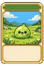 การ์ดสไลม์ | เกราะ | LUK +2 หลบสมบูรณ์ +1 | สไลม์ | 0.2% |
| การ์ดสไลม์คริสตัล | เครื่องประดับ 1 | ใช้สกิลถอนพิษ Lv1 ได้ (ยังไม่เปิดผล) | สไลม์คริสตัล | 0.1% |
| การ์ดสไลม์ทราย | เกราะ | STR +1 โจมตี +10 | สไลม์ทราย | 0.2% |
| การ์ดสไลม์ราเมือก | อาวุธ | ฆ่าเผ่าสัตว์น้ำ ได้ SP +5 | สไลม์ราเมือก | 0.01% |
 การ์ดสาวใช้ปราสาทร้าง การ์ดสาวใช้ปราสาทร้าง | โล่ | สาวใช้ปราสาทร้าง | 0.01% | |
| การ์ดสุนัขกระดูก | รองเท้า | HP สูงสุด +8% SP สูงสุด +8% | สุนัขกระดูก | 0.01% |
| การ์ดหนอนใบไม้ | อาวุธ | VIT +1 HP +100 | หนอนใบไม้ | 0.2% |
| การ์ดหนูคุกพิษ | หมวก (บน) | หนูคุกพิษ | 0.01% | |
 การ์ดหนูถ้ำจอมขโมย การ์ดหนูถ้ำจอมขโมย | หมวก (บน) | กันหลับ 20% ป้องกัน +1 | หนูถ้ำจอมขโมย | 0.01% |
| การ์ดหมวกผีสิง | อาวุธ | ตีติดพิษ 4% โจมตี +10 | หมวกเกราะผีสิง | 0.01% |
| การ์ดหมาป่าที่ราบ | อาวุธ | ดาเมจใส่พวกหมูป่า +30% | หมาป่าที่ราบ | 0.01% |
| การ์ดหมาป่าเฝ้าสุสาน | รองเท้า | HP สูงสุด +10% AGI +1 | หมาป่าเฝ้าสุสาน | 0.01% |
| การ์ดหมูป่า | โล่ | โดนเผ่าสัตว์ตีเบาลง 30% | หมูป่าเขาเดียว | 0.01% |
 การ์ดหมูป่าซากเน่า การ์ดหมูป่าซากเน่า | ผ้าคลุม | ต้านธาตุอมตะ 30% FLEE +5 | หมูป่าซากเน่า | 0.01% |
 การ์ดหมูป่านักธนู การ์ดหมูป่านักธนู | เครื่องประดับ 1 | หมูป่านักธนู | 0.01% | |
| การ์ดหมูป่านักรบเกราะเพลิง | โล่ | ป้องกัน +1 สะท้อนดาเมจตีใกล้ 5% | หมูป่านักรบเกราะเพลิง | 0.01% |
| การ์ดหอยงวงหนาม | เกราะ | เกราะไม่แตก (เกมเรายังไม่มีของแตก) ป้องกัน +1 | หอยงวงหนาม | 0.01% |
| การ์ดหัวหน้าหมูป่าเขาเหล็ก | เกราะ | สะท้อนดาเมจตีใกล้ 30% | หัวหน้าหมูป่าเขาเหล็ก | 0.01% |
| การ์ดหิ่งห้อยเพลิง | เกราะ | หิ่งห้อยเพลิง | 0.01% | |
| การ์ดหินจิ๋ว | โล่ | ป้องกัน +2 | หินจิ๋ว | 0.01% |
| การ์ดหินลอยมีตา | อาวุธ | ตีติดคำสาป 5% โจมตี +5 | หินลอยมีตา | 0.01% |
| การ์ดหีบเลียนแบบ | เครื่องประดับ 1 | หีบเลียนแบบ | 0.01% | |
| การ์ดเห็ดยักษ์เดินได้ | โล่ | กันกลายเป็นหิน 20% ป้องกัน +1 | เห็ดยักษ์เดินได้ | 0.01% |
 การ์ดเห็ดเรืองแสง การ์ดเห็ดเรืองแสง | หมวก (บน) | INT +2 เวลาร่าย -5% | เห็ดเรืองแสง | 0.01% |
| การ์ดเห็ดสปอร์พิษ | อาวุธ | ดาเมจใส่เผ่าสัตว์น้ำ +20% | เห็ดสปอร์พิษ | 0.01% |
| การ์ดไหผีสิง | รองเท้า | ฟื้น SP เอง +15% | ไหผีสิง | 0.01% |
 การ์ดอสูรสามหัว การ์ดอสูรสามหัว | เกราะ | อสูรสามหัว | 0.01% | |
 การ์ดอัศวินเกราะทมิฬ การ์ดอัศวินเกราะทมิฬ | ผ้าคลุม | ต้านธาตุไร้ธาตุ 20% | อัศวินเกราะทมิฬ | 0.01% |
 การ์ดอัศวินม้าอเวจี การ์ดอัศวินม้าอเวจี | อาวุธ | อัศวินม้าอเวจี | 0.01% | |
 การ์ดอัศวินโลหิต การ์ดอัศวินโลหิต | อาวุธ | ตีแล้วร่ายสกิลเองบางครั้ง (สกิลนั้นยังไม่มีในเกม ยังไม่มีผล) | อัศวินโลหิต | 0.01% |
 การ์ดอัศวินศพ การ์ดอัศวินศพ | โล่ | โดนเผ่าปีศาจตีเบาลง 30% | อัศวินศพ | 0.01% |
| การ์ดไฮดรา | อาวุธ | ดาเมจใส่เผ่ามนุษย์ +20% | ไฮดรา | 0.01% |